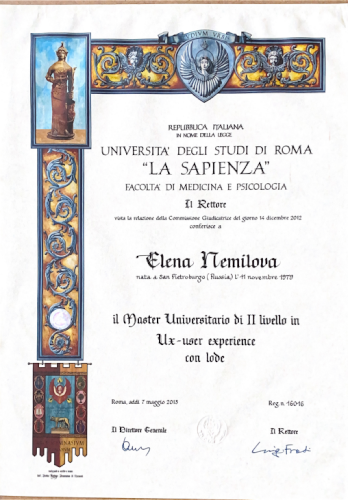
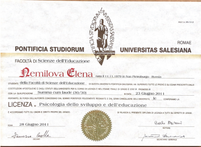
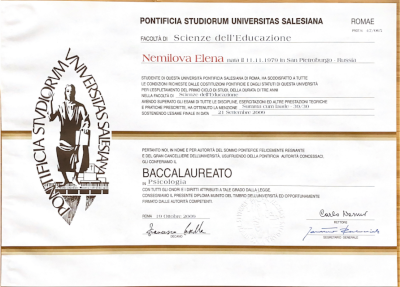
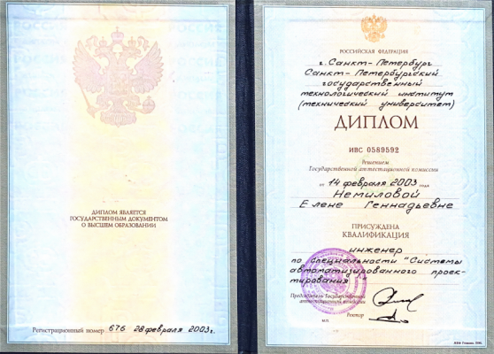

психолог в риме
елена немилова
Эксперт когнитивных процессовСексолог
Помогаю найти равновесие быстро и эффективно
ЗаписатьсяДвойная академическая премия
Аккредитация в Италии №22245
Член Ассоциации ARPEC
Главный психолог социального проекта “Infogiovani”
Научный консультант при частных и государственных школах Рима
Эксперт в области проблематичного развития, сложностей в обучении и образовательных технологий
Обо мне
Елена Немилова
- аккредитованный и премированный психолог
- эксперт когнитивных процессов
- сексолог
«Люблю науку и стремлюсь систематизировать знания как для себя, так и для своих собеседников. Обладаю способностью ясноти доступно объяснять сложные концепции. В работе внимательна, тактична и открыта»
-
16+
лет опыта работы
-
150+
часов личной терапии
-
200+
часов супервизии
Записана в Реестр Психологов Лацио под номером
22245 (Ordine degli psicologi del Lazio) и в
Национальный Реестр Психологов (Ordine Nazionale
degli Psicologi)
Прохожу постоянное повышение квалификации (ECM)
Веду образовательные проекты, просветительскую и научно-практическую работу, целью которой является практическое применение знаний о психологии и деятельности мозга в вопросах эмоционального благополучия человека
Образование и квалификация
- 2025 - Университетский Мастер І уровня "Sessuologia Clinica", Università degli Studi di Milano - Bicocca (Университет Бикокка, Милан")
- 2013 - Университетский Мастер II уровня “UX Research”, La Sapienza, Roma (Университет Ла Сапиенца, Рим) 
- 2011 - Премированный психолог высшей категории, красный диплом "Licenza in Psicologia", UPS, Roma (Салезианский университет, Рим) 
- 2009 - Психолог, красный диплом "Baccalaureato in Psicologia", UPS, Roma (Салезианский университет, Рим) 
- 2003 СПбГТИ "Инженер по оптимизации систем автоматизированного проектирования, СПоти (ТУ), Санкт-Петербург 
Сферы моей работы
“Самодиагностика может быть неточной, поэтому поручите анализ Вашей ситуации мне”
Консультирование
- в сферах личностного роста
- преодоления кризисов
- принятия решений
- профориентации
- новых зависимостей
Психологическая поддержка
- причины тяжелых состояний (обид, депрессий, апатии, прокрастинации)
- помогаю комфортно прожить адаптацию в новой стране
- понять глубинный внутренний мир
- понять суть явлений и найти дорогу к абсолютной ясности
- помогаю ощутить легкость и желание действовать, жить
“Если мои компетенции не подойдут вашему запросу — помогу подобрать подходящего специалиста”
Основы работы
-
Шаг 1: Формулирование вопроса
Первой фразой в нашем сотрудничестве является серия встреч, на которой мы знакомимся, выясняем ваш запрос и четко формулируем проблему. Важно создать основу для дальнейшей работы, включая установление целей и условий сотрудничества
На этом этапе возможно использование психологических тестов
Продолжительность данной фазы составляет 2-4 сессии
-
Шаг 2: Работа над достижением целей
Как только мы определили направление работы, начинаем систематически двигаться к достижению поставленных целей
В процессе консультаций применяются эффективные методы и упражнения для достижения желаемых результатов
форматы взаимодействия
важные детали
Длительность встреч

Длительность индивидуальной консультации - 45/50 мин - обусловлена особенностями человеческой психики. В случае встречи с парой встреча требует большей продолжительности и длится 80 мин
Методы и подходы
Я работаю через активное слушание и через метод майевтики. В моей работе я использую диагностические методы, такие как структурированные опросники, проективные методики, клиническое наблюдение. В рамках сессии и в качестве домашнего задания я применяю когнитивно-поведенческие упражнения и техники для практического применения полученных знаний
Цель работы
Главной целью моей работы является глубинное изменение жестких и дисфункциональных схем поведения (и мышления) человека. Иногда для этого достаточно приобретения определенных навыков (эффективной коммуникации, адекватной самооценки, уверенности в себе и тп), а иногда необходимо знать историю жизни, которая повлияла на человека
Стоимость работы
Фактуры психолога являются медицинскими расходами Экономическое бремя, которое влечет за собой психологический путь, должно быть тяжелым, но выносимым. Решение пойти по психологическому пути может представлять собой трудный выбор как с эмоциональной, так и с экономической точки зрения. Стоимость консультаций обсуждается лично при первой встрече, чтобы адаптировать ее под вашу ситуацию и потребности
Истории успеха и отзывы могут создать ожидания, а ожидания могут затруднить процесс психологической помощи
Я за честное взаимодействие,
и все добровольно
оставленные отзывы Вы
можете увидеть
в
Google Business
Запишитесь на консультацию
Оставьте свои данные, и я свяжусь с Вами в ближайшее время для обсуждения запроса